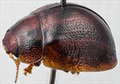
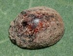
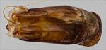
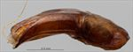
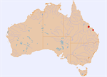

Click on images to enlarge


Male, Sarina, central Queensland


Male, Sarina, central Queensland


Aedeagus, dorsal view (Sarina, central Queensland)


Aedeagus, lateral view (Sarina, central Queensland)


Distribution
Name
Trachymela sp. Ta221
Reference specimen
2019-049b, Sarina, central Queensland.
Adult Description
Length: ♂ 4.7–5.3 mm (n=12), ♀ 5.0–5.8 mm (n=9).
Colouration:
- Head: mid- to dark brown or reddish-brown, mandibles concolorous with black tips; antennae uniformly straw-brown, often with distal half of antennomere 11 fractionally darker.
- Pronotum: brown, concolorous with head, with two closely spaced black maculae situated behind each eye, the outer centred behind centre of eye is broader and usually in the shape of a “c”, with open end of “c” facing lateral margin of pronotum, the inner is usually a longitudinally oriented black streak but may be reduced to a spot, sometimes the maculae are only fractionally darker than the surrounding area, much less often are they absent completely.
- Scutellum: brown, concolorous with or fractionally darker than adjacent area of pronotum, usually with a broad border of a darker shade.
- Elytra: brown, concolorous with pronotum, with diffuse darker brown or black markings usually present throughout as small relatively well-defined maculae that extend in 3 partially interrupted bands from elytral base towards apex: the most prominent band is in line with the black macula on pronotum and extends roughly along centre of disc, a second runs along elytral suture, usually broadest around the elytral summit where it sometimes extends almost to first band, a third, less prominent band, along margin of elytral disc, sometimes these dark areas are absent, thin strip adjacent to scutellum sometimes black, humeral callus variable, concolorous with surrounds or fully or partially black.
- Venter & Legs: venter mid-brown to dark reddish-brown, sometimes with lateral regions of metaventrite noticeably darker, legs slightly paler, epipleura brown.
- Cuticular Wax: often thick, usually evenly distributed layer of light brown to mid-brown colour, with only scutellum and adjoining section of suture to elytral summit more lightly dusted or wax-free; thin, lighter-coloured greyish longitudinal streaks may be present.
Morphology:
- Shape: body small, evenly rounded, greatest height viewed laterally clearly in front of middle of elytral margin.
- Head: punctures moderate in size (pd ≈ 1.5–2× ef) and evenly and densely distributed; antennae short (AL/BL: ♂ 34–38%, ♀ 33–35%), filiform.
- Pronotum: almost evenly curved transversely, very slightly explanate at extreme margins, lacking a foveal depression, an approximately round and very slightly elevated region is usually present in line with each eye, puncturation clearly impressed in discal area, evenly to very slightly unevenly distributed and moderately dense (spacing ≈ 2–3 pd), becoming much coarser towards lateral margins; front margins join lateral margins in a smoothly rounded right-angle, with lateral margin initially straight or very lightly curved for a short length and then curving smoothly and gradually towards rear margin.
- Scutellum: surface smooth or slightly rough, puncturation variable, from completely unpunctured to moderately densely punctured (similar to adjacent pronotal surface), punctures usually shallower than on pronotum.
- Elytra: surface evenly curved, punctures distinct and evenly and closely distributed (pd ≈ 2 pd) over almost the whole surface, interstices flat for the most part, never obscuring punctures, with much smaller punctures scattered over them, interstices in posterior half only slightly more convex, with VR3, VR5 (less often) and VR7 usually present as longitudinal, interrupted, pale weals, surface continuous under humeral callus, elytral suture carinate in posterior third, lateral margins straight or slightly rounded, often with anterior third oblique; vertical extension of epipleura considerable (HCE/PW = 0.38–0.41).
- Venter: prosternal process narrowest anteriorly and gradually widening towards posterior, rarely almost parallel-sided, open or lightly-closed anteriorly, very sparse scatter of short setae at rear of prosternal process and mesoventrite, a single seta on anterior and median trochanter; front edge of metaventrite beveled, truncate.
Male Genitalia (Aedeagus):
- Dimensions: moderate (LPE = 30–33% BL).
- Dorsal view: shaft widest at basal sulcus then narrowing briefly before becoming almost parallel-sided (rarely becoming fractionally wider) to about middle of ostium level, from where the sides converge towards apex in a smooth, convex arc, dorsal surface smoothly curved with well-defined, broad and quite deep dorso-median channel, dorso-lateral channels broad and well developed, with pair of dorsal ostial processes projecting almost to level of apex, the split in the dorsal ostial processes is a considerable distance from rear of dorso-lateral channels, rear of ostium clearly defined by a transverse suture at 40–50% of distance from basal sulcus to apex, ostium large, tip protruding slightly.
- Lateral view: shaft curved very slightly near basal sulcus, then almost straight throughout central region to near apex, where there is a slight downward curve, thinning towards apex over 20% of length with dorsal ostial processes often projecting well above upper surface, tip deflexed, flagellum very thin and very loosely curved or straight.
Immature Stages
Unknown.
Similar species
- Ta36: it is almost impossible to separate this species from Ta221, with both having the dark markings on the pronotum and elytra. Ta221 tends to be slightly darker overall than Ta36, often being dark reddish-brown. The lighter-coloured longitudinal weals that are quite prominent in almost all specimens of Ta36 examined are less prominent and usually discontinuous in Ta221. There are some slight but consistent differences between these species in the structure of the aedeagus. The anterior border of the ostium is clearly outlined in Ta221 where the dorsal ostial processes terminate in a fine line, whereas in typical Ta36 specimens, the dorsal ostial processes merge smoothly with the dorsal surface of the aedeagus.
- Ta222:
Notes
- Morphological Variation: the specimens from Great Keppel Island are often darker than the mainland specimens and frequently do not have the black markings on the pronotum and elytra, or they are barely darker than the surrounds and very inconspicuous.
- Host Associations: the only known host of this species is the broad-leaved Eucalyptus platyphylla (Symphyomyrtus: Exsertaria). A number of specimens from Great Keppel Island have no host recorded, but the Virtual Herbarium (ALA) records E. platyphylla as being present on the island.
Copyright © 2026. All rights reserved.